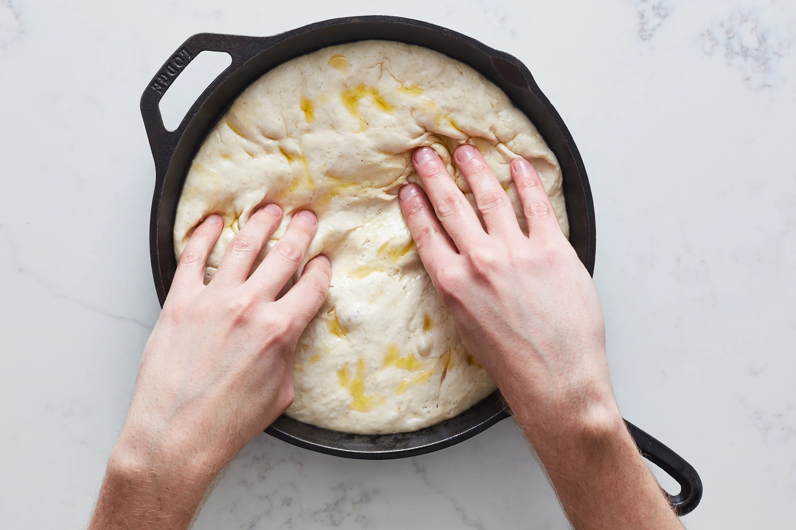

Sicilian Grandma Pizza Dough

Description:
This recipe is based on memory but a strong one: a dark brown chewy crust, a thick sauce, olives, onions, mushrooms and dried oregano. It was oily but there was no cheese. The main thing was the way the toppings thickened the sauce. I still love veggie-heavy pizzas-the basis for my belief that good olives are always great on pizza.
Unfortunatly, Great-Grandma Lena isn't around to share her recipe. Even if she was, I doubt I'd get more than "a pinch of this, a pinch of that". So, I've taken a technical approach to recreating something ephemeral.
You can use this recipe for either grandma pies, or thicker-crusted New York City-style Sicilian pizzas.
Recipe:
- 900g high-protein flour
- 100g whole-grain flour
- 30g sea salt
- 720g water at 18 degrees Celcius
- 100g starter
- 60g extra-virgin olive oil
Steps:
-
Weigh all the ingredients in separate containers. In a large mixing bowl, combine the flours and salt and mix everything.
- In another large mixing bowl, combine the water and starter
-
Create a crater in the flour and pour the liquids in the center.
- Begin mixing with your hand. Start in the center of the bowl and mix in a clockwise fashion until the dough comes together, at this point add 60g of olive oil and continue to mix until the dough is fully incorporated.
Stop mixing, cover the bowl with plastic wrap, and set aside for 30 to 45 minutes.
-
Mix by stretching and folding the dough onto itself for about 6 minutes
-
Transfer the dough to a lightly oiled container with a lid and let it rest at room temperature. Stretch and fold the dough for 1 minute every 30 minutes for 3 hours (six times).
- Rest at room temperature (covered) for 30 minutes
- Using about 40g of olive oil. lightly oil two or three baking pans.
- Lightly flour your hands, and using a dough cutter and scale, portion then shape the dough (three 700g or two 900g pieces) into rectangles by folding the edges into themselves.
- Transfer each dough to the center of a pre-boiled baking pan. Cover each pan with plastic wrap and allow to rest at room temperature for 1 hour.
- Lift the dough and press out any air from the bottom of the pan. Carefully stretch the dough to the pan's edges. Using your fingertips, gently dimple the entire length of the dough.
Cover and let proof at room temperature for 6-12 hours or until the dough has doubled in size.
- Par-bake or top and bake according to your chosen recipe's instructions. Just add 10 extra minutes to bake time if you skip the par-bake.